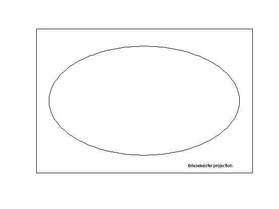
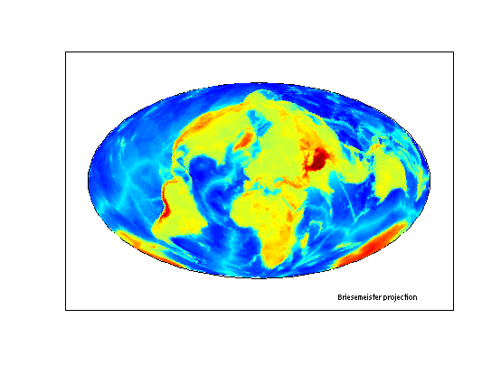
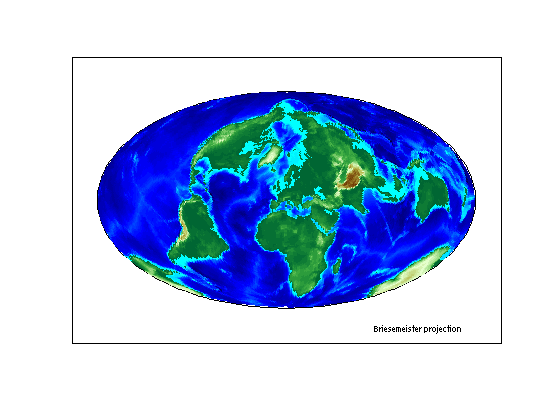
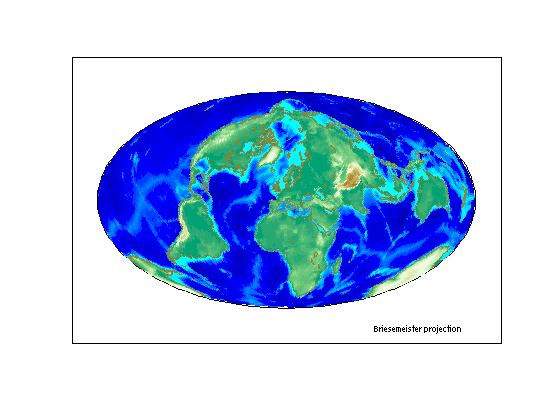

This demo constructs a map of major world cities enhanced with coastlines and terrain. It uses the modified azimuthal Briesemeister map projection. Then it allows a user to interactively pick a location and automatically highlights the nearest city, displaying its name and coordinates.
Construct the axes.
figure; axesm bries text(1.2, -1.8, 'Briesemeister projection', 'FontSize', 8) framem('FLineWidth',1)
Load and display a 1-by-1-degree elevation grid.
load topo geoshow(topo, topolegend, 'DisplayType', 'texturemap')
Get a colormap appropriate for elevation.
demcmap(topo)
Make it brighter.
brighten(.5)
Load global coastline coordinates.
load coast
Generalize the coastlines to 0.25-degree tolerance.
[rlat, rlon] = reducem(lat, long, 0.25);
Plot the coastlines in brown.
geoshow(rlat, rlon, 'Color', [.6 .5 .2], 'LineWidth', 1.5)
Load the "populated places" point array from the "worldlo" atlas data set and discard the initial element, which represents a combination of data.
load('worldlo','PPpoint') PPpoint(1) = [];
Extract the point latitudes and longitudes with extractfield, and add them to the map.
lats = extractfield(PPpoint,'lat'); lons = extractfield(PPpoint,'long'); geoshow(lats, lons,... 'DisplayType', 'point',... 'Marker', 'o',... 'MarkerEdgeColor', 'r',... 'MarkerFaceColor', 'r',... 'MarkerSize', 3) text(-2.8,-1.8,'Major World Cities', 'FontSize',8)
Prompt the user to click on or near a city, capturing the selected latitude and longitude with inputm. Use distance to calculate the great circle distance betweeen the selected point and every city in the database. Determine index of the closest city, change the appearance of its marker symbol, and display the city's name and coordinates.
h1 = text(-2.8, 1.7, 'Click on a dot for its city name'); h2 = text(-2.8, 1.5, 'Press ENTER to stop'); while true [selected_lat,selected_lon] = inputm(1); if isempty(selected_lat) break % User typed ENTER end d = distance(lats, lons, repmat(selected_lat,size(lats)),... repmat(selected_lon,size(lons))); k = find(d == min(d(:))); where = [PPpoint(k).lat,PPpoint(k).long]; plotm(where, 'o',... 'MarkerEdgeColor', 'k',... 'MarkerFaceColor', 'y',... 'MarkerSize', 3) delete(h1,h2) h1 = text(-2.8, 1.7, PPpoint(k(1)).string); h2 = text(-2.8, 1.5, num2str(where,'%10.2f')); end disp('End of input.')
End of input.